Tourist Information and Photographs of Coniston Water
Coniston Water is the regions third largest lake at 5 miles long, ½ a mile wide, a maximum depth of 180 feet, and set with good access and in easy reach from the popular village of Coniston.
There are many non-demanding walks along it’s wooded shores, which, are probably best viewed from the decks of the Coniston Launch or the Steam Yacht Gondola.
The lake, and it’s Piel Island, was the inspiration for the book, “Swallows and Amazons” by the author, Arthur Ransome in which the island was re-named “ Wild Cat Island”.
Coniston Water was also the scene of Donald Campbell's attempt on the world water speed record in his jet-powered boat, Bluebird, in January 1967. This tragically resulted in his death when the boat flipped in excess of 300m.p.h. A memorial to him stands in the village.
In the summer, when the water levels are lower, the pebbled shores are ideal for picnics and provide good views of the little over 800 metre high “Old Man” to the north west.
It is possible to hire boats, and windsurfing is a popular pastime.
Together with the shoreline amenities, and those of the village, this lake will fulfill the expectations of most who visit here.
It can be quickly reached by road from Broughton-in-Furness, Ambleside, Windermere and Ulverston and regular bus services operate to and from the village.
The nearest rail stations are Ulverston, Windermere and Foxfield, near Broughton-in-Furness.
Click on the photographs for a larger image.
All images open in a new window.
All images are 800x 600 resolution and may take a long time to download on slower internet connections.
For larger images (1024x768), please visit our
computer wallpapers section.
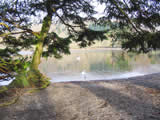 |
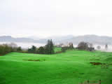 |
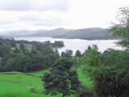 |
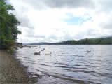 |
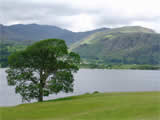 |
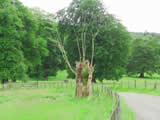 |
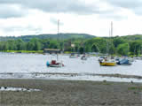 |
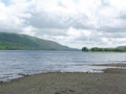 |
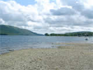 |
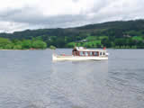 |
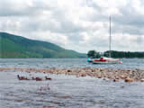 |